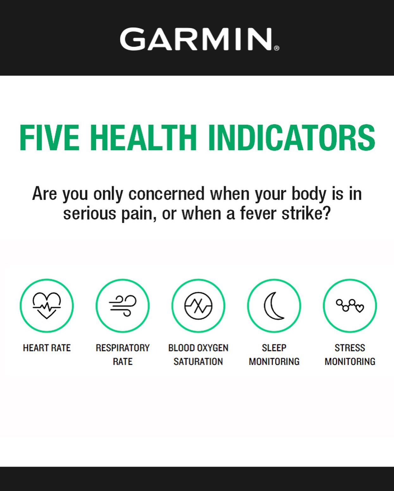
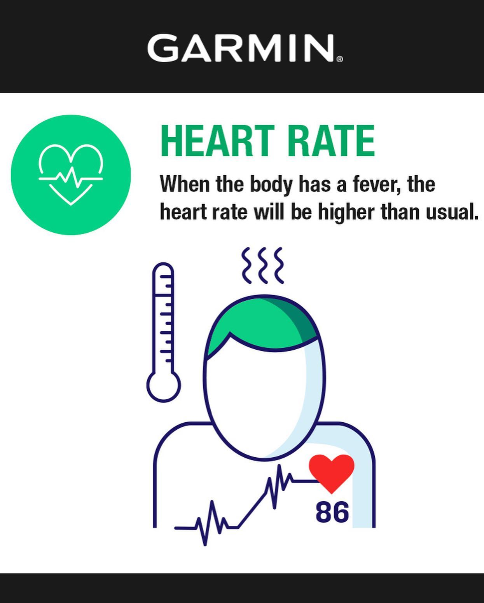
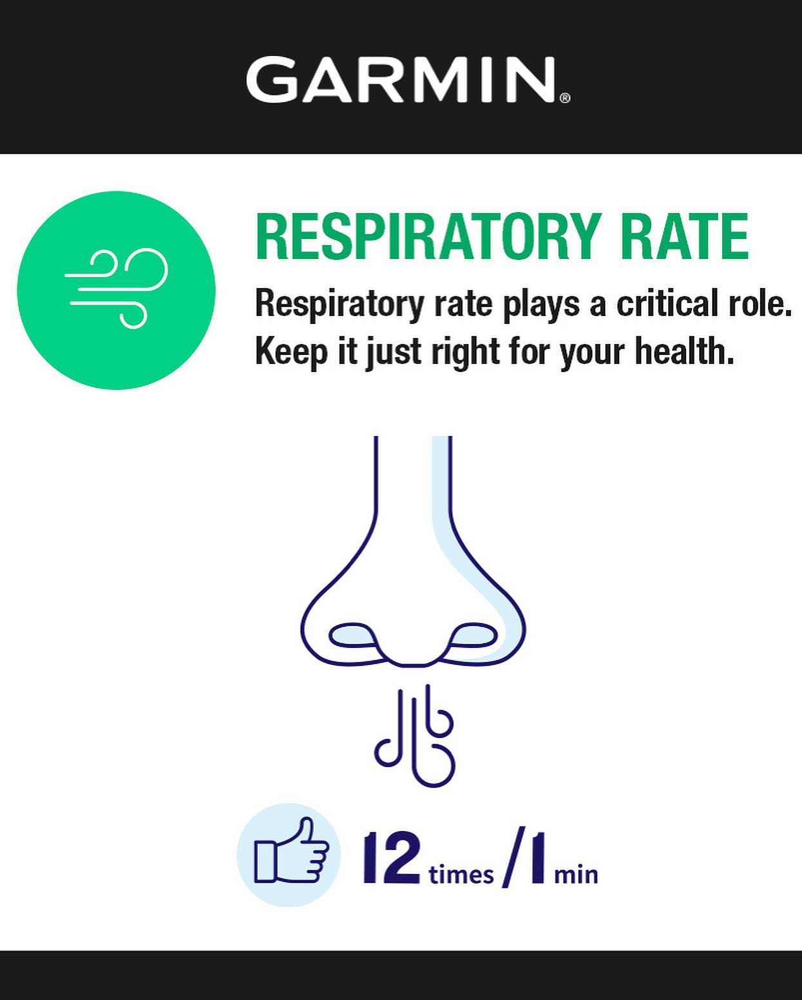
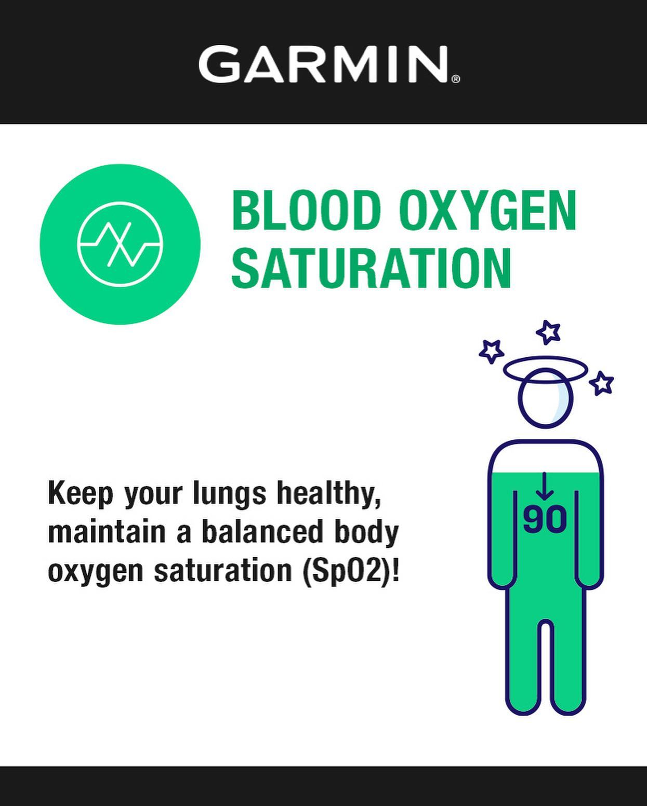
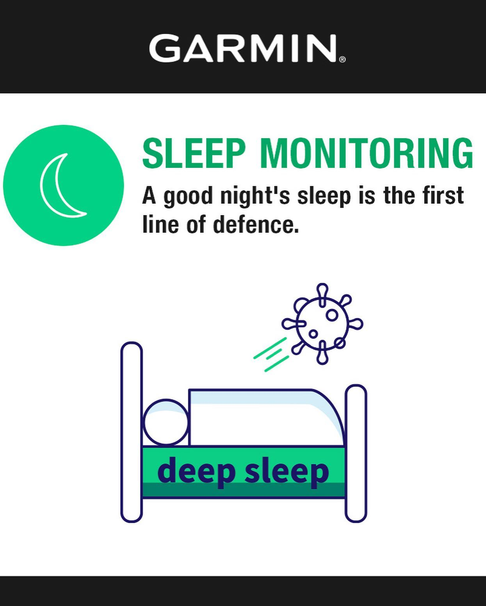
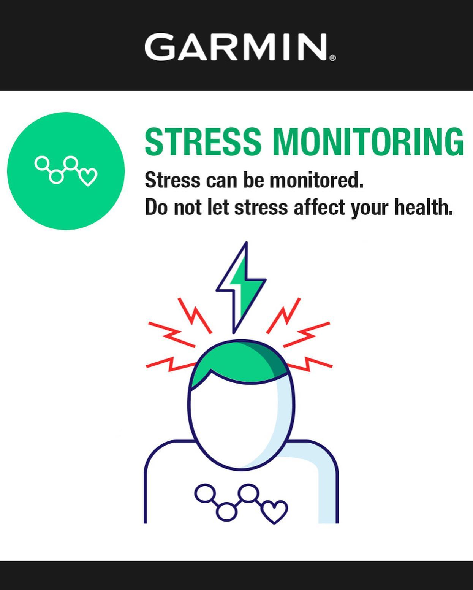

How is everyone doing in the middle of Circuit Breaker? We are like everyone else going through Coronacoaster - ups and downs of our mood during the pandemic 😃😞🤪 During the past 5 weeks we've come up with a good plan of attack to deal with anxiety and frustration: 1️⃣ every time anxiety creeps in, we put on sneakers and run away 🏃🏽♀️🏃🏽(luckily we can do this in Singapore) 2️⃣ our toddler son throwing a tantrum - time for weights training and "kettleboy" swings 3️⃣ joined #Garmin150 challenge to keep ourselves honest and exercise at least 150 min per week. You can do that too and stand a chance to win @garminsg watch! Just share your workout and tag #Garmin150 4️⃣ lastly, doing the best we can to protect ourselves and stay healthy, gives the peace of mind. Masks, healthy diet and social distancing aside, we keep an eye on 5️⃣ major health indicators crafted by Garmin: heart rate, respiratory rate, blood oxygen, sleep and stress monitoring. Today, more than ever before it is important to have scientific data on hands to reveal the truth about our health instead of relying on assumptions, and it's so great that Garmin Watch can support us with this. Swipe left to learn more about health precautions from @garminsg and read up more about it here: https://bit.ly/garmin-immunity — #circuitbreaker #coronacoaster #garmin150 #garmin150challenge #partnership #stayhome #staysane #stayhealthy #quarantinelife #quarantinetraining #lockdownlife #singapore #sgrunners #singapore
2020-05-06 18:20:46
Back to main page